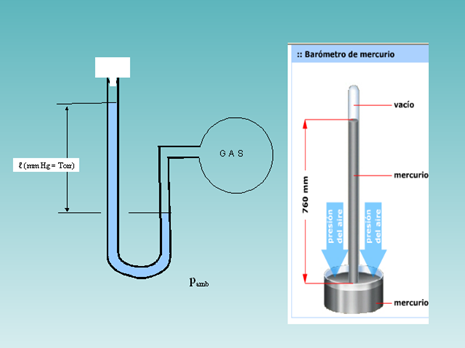

El torr una unidad de presión, así denominada en homenaje al físico y matemático italiano Evangelista Torricelli (1608-1647).
Originalmente un torr se definió como equivalente a una presión de un milímetro de mercurio (mmHg).
El milímetro de mercurio se define como la presión ejercida en la base de una columna de un milímetro de altura de mercurio, y como la densidad de este metal es de 13,595 1 g/cm³, bajo la acción de la gravedad normal (9,80665 m/s²), el mmHg equivale a 133,322 387 415… Pa; por su parte, el torr equivale a 1/760 de la presión atmosférica normal, es decir, 133,322 368 421… Pa (los decimales son periódicos). Hasta 1954 ambas unidades eran iguales, pero tras la redefinición ese año del torr por la BIPM (Oficina Internacional de Pesos y Medidas) hay una diferencia mínima:
1 Torr = 0,999 999 857 533 699… mmHg
1 mmHg = 1,000 000 142 466 321… Torr
Debido a que la presión de una atmósfera normal estaba definida cuantitativamente en el Sistema Internacional de Unidades —como unidad auxiliar, ya que la unidad oficial de presión es el pascal (Pa)—, el torr se definió exactamente como 101325/760 Pa. En la edición de 2006 del SI, el torr ha desaparecido. Aunque su uso es todavía frecuente en medidas de baja presión (aunque para medir la tensión arterial en medicina se emplean mmHg), el pascal es la unidad de presión recomendada.